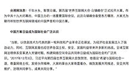
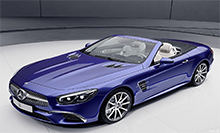

-
-
自然语言处理
-
图像识别
-
推荐系统
-
关于我们
-
-
自然语言处理
Natural
Language
Process
语言是人类区别其他动物的本质特性。在所有生物中，只有人类才具有语言能力。人类的多种智能都与语言有着密切的关系。人类的逻辑思维以语言为形式，人类的绝大部分知识也是以语言文字的形式记载和流传下来的。因而，它也是人工智能的一个重要，甚至核心部分。
用自然语言与计算机进行通信，这是人们长期以来所追求的。因为它既有明显的实际意义，同时也有重要的理论意义：人们可以用自己最习惯的语言来使用计算机，而无需再花大量的时间和精力去学习不很自然和习惯的各种计算机语言；人们也可通过它进一步了解人类的语言能力和智能的机制。实现人机间自然语言通信针对一定应用，具有相当自然语言处理能力的实用系统自然语言处理，即实现人机间自然语言通信自然语言的形式（字符串）与其意义之间是一种多对多的关系。自然语言处理（NLP）是计算机科学它是人工智能，语言学关注计算机和语言之间的相互作用的领域自然语言处理研究逐渐从词汇语义成分的语义转移，转为叙事的理解。它是相当于解决中央的人工智能问题使计算机和人一样聪明的AI语言资源：
语料库,词典关键技术：
汉字编码词法分析，句法分析，语义分析，文本生成，语音识别应用系统：
信息检索和过滤，拼音汉字转换系统，机器翻译，新信息检测参考资料：
百度百科 -
图像识别
image
identification
文字识别:
人们在生产和生活中，要处理大量的文字，我们将文字识别提取，提高处理效率。车辆识别：
将汽车提取并识别出来，通过图像预处理、特征提取，识别车辆信息。菜品识别：
自动在图像中检测和跟踪菜品，进而对检测到的菜品进行菜品识别。动植物识别：
动物识别系统是人工智能技术的一个具体应用实例，这个系统吸收了人工智能技术的思想。 -
智能推荐
intelligent
recommendation推荐不止是算法，推荐的关键是数据！
数据是一切算法的根基，是一切迭代的依据！
VAI智能推荐系统。以用户行为数据为基础，采用深度学习等先进的机器学习 算法，
帮助企业构建智能物品分发中心，实现对用户“千人千面”的个性化推荐，改善用户体验， 提升业务指标。 -
Hello Word !
随着大数据时代的到来，与之有关的技术及应用价值也得到人们的广泛认同，而其核心技术之一的知识图谱也随着互联网技术巨头公司的应用得到迅速发展。 简单来说，知识图谱是把所有不同种类的信息连接在一起而得到的一个关系网络，它提供了从“关系”的角度去分析问题的能力，是关系最有效的表达方式。 同时文献与图片的查找也是人们在生活中很重要的一部分，但通常在所需查找的结果中附带着大量的无关信息，噪音很大，因而如此我们要更精确地提供用户所搜索的内容， 提升用户体验。
首先我们创建一个可动的模型，用3dsMax制作人物模型，把该人物模型的动作都做出来做成时间线，然后将其渲染成带通道的动画。 用程序负责把特定指令下的带动画的图引用进去，并帮助用户完成指令下的对话，数据搜索，文字查询，图片查询，以及智能推荐的后续服务。 为此我们设计了基于知识图谱的AI智能虚拟机器人。